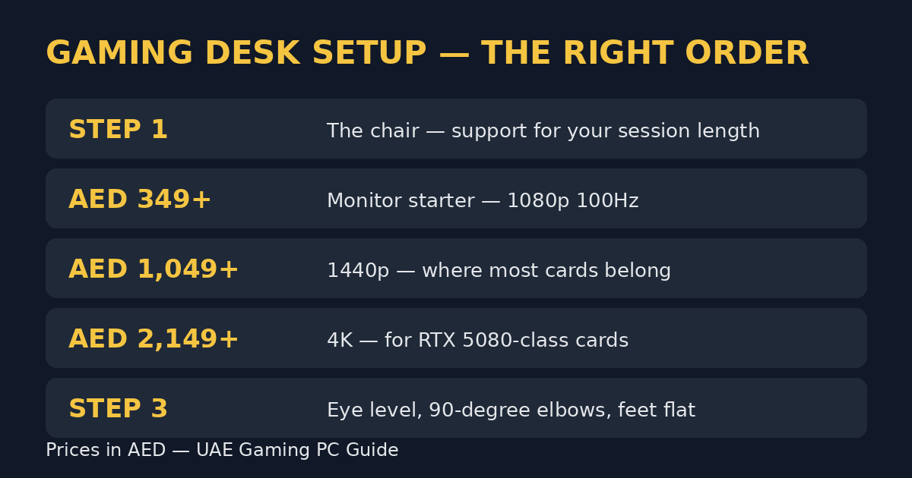

Most setup guides start with the PC and end with whatever chair is left in the budget. This one runs the other way, because your body keeps score differently than your benchmark tool does: the PC decides your frame rate, but the chair decides whether you are still comfortable in hour three, and the monitor decides whether those frames ever reach your eyes properly. Here is the order that works, with UAE prices at every step.

Before screens and specs, sit down — literally. A gaming chair is the only part of the setup in contact with you for the entire session, and the difference between a flat starter seat and a chair with real lumbar support compounds over hundreds of hours. UAE buyers can buy gaming chair in uae ranges from simple starter models to ergonomic flagships; the honest buying rule is to choose by session length. Under an hour a day, almost anything works. Three-plus hours — the tier most committed gamers actually live in — deserves the support upgrade, and it is cheaper than the physiotherapy.
With the seat settled, the screen is a matching exercise, not a shopping spree. The range of gaming monitors for pc gaming in the UAE runs in clean tiers: 24-inch 1080p 100Hz at AED 349, 27-inch 1080p 240Hz at AED 849 for competitive play, 1440p from AED 1,049 where most modern cards belong, 4K 144Hz from AED 2,149, and 4K OLED 240Hz flagships at AED 3,449–4,409. Your graphics card picks the tier: 5060-class cards feed 1080p and 1440p, the 5070 Ti feeds high-refresh 1440p, and only a 5080-class card earns a 4K OLED.
| Setup order | Decision | UAE price (AED) |
|---|---|---|
| 1. Chair | Support matched to your session length | Starter to flagship range |
| 2. Monitor | Tier matched to your graphics card | 349 – 4,409 |
| 3. Desk details | Monitor height at eye level, chair arms under the desk | Mostly free — adjustment, not purchases |
The monitor tier only makes sense against the graphics card feeding it. Our companion guide to graphics card tiers in the UAE prices every GPU band in AED and shows exactly which screen each one deserves.
Chair first, monitor second, matched to the card you own — that order turns a pile of purchases into a setup. Spend the support money where your back notices it and the screen money where your card can feed it, and the desk is done properly, once.